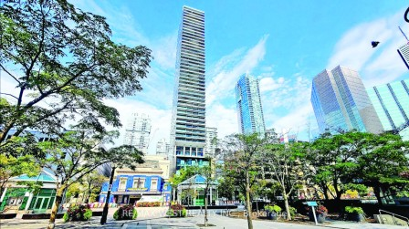

多伦多核心地区一个位于37层的豪华柏文单位，以亏损32万元的价格成交，几十年来多伦多的柏文市场从未如此萧条。
多伦多核心地区一个位于37层的豪华柏文单位，以亏损32万元的价格成交，几十年来多伦多的柏文市场从未如此萧条，但卖家却很满意。
这栋柏文楼位于多伦多皇帝街（King Street），靠近多伦多国际电影节举办地、Roy Thompson Hall，这个三房单位本周以123万元的价格售出，亏损32万元。卖家对这笔交易很满意，虽然比2021年155万元的买入价跌了约21%，不过总算可以把资产转移到其他地方。
代表卖方的挂牌房产经纪人罗密欧（Rebecca Romeo）说：「客户想改变自己的生活，继续前进。他对售价很满意。」她指出，同一栋楼里许多其他经纪人也面临著同样的困境，因为他们感到卖出房子有压力。
Urbanation和加拿大帝国商业银行（CIBC）最近发布的一份房地产报告称，大多伦多地区的待售柏文过剩，导致很多业主无法出售，因为各种因素的综合作用使买家更挑剔。
报告的作者是加拿大帝国商业银行的塔尔（Benjamin Tal）和Urbanation的希尔德布兰德（Shaun Hildebrand）均指出，虽然低层柏文市场似乎「状况良好」，但柏文市场「明显处于衰退期，情况恶化到了几十年来从未见过的程度」。
Fox Marin and Associates公司的福克斯（Ralph Fox）说，房地产经纪人实地看到这种情况。
他说：「房产在市场上滞留的时间更长了，柏文的月库存量开始增加。」但他表示，虽然许多楼花的业主都是投资者，但很多人并没有处于被迫出售的境地。他们还在坚持，如果你在多伦多拥有来之不易的资产，就请坚持，利率会下降的。
造成供应过剩的一个因素是，新开发的柏文往往面向投资者而非住户。Devron开发公司的撒法波（Pouyan Safapour）说：「我们在不景气的时候有了很多房子，很遗憾，有些人在接下来的几个月会蒙受损失。」
Aaron Zhang,Local Journalism Initiative Reporter